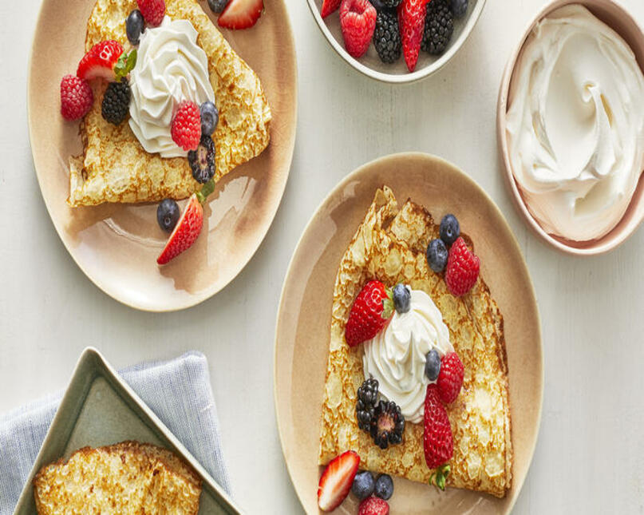

Basic Crepes

Crepe, also spelled crêpe, is a French pancake made of a thin batter containing
flour, eggs, melted butter, salt, milk, water, and, if the crepes are to
be served with a sweet sauce or garnish, sugar. Crepes can be filled with
a variety of sweet or savoury mixtures.
Ingredients
- 1 cup all-purpose flour
- 2 eggs
- 1/2 cup milk
- 1/2 cup water
- 1/4 teaspoon salt
- 2 tablespoons butter (melted)
Steps
- In a large mixing bowl, whisk together the flour and the eggs. Gradually add in the milk and water, stirring to combine. Add the salt and butter; beat until smooth.
- Heat a lightly oiled griddle or frying pan over medium high heat. Pour or scoop the batter onto the griddle, using approximately 1/4 cup for each crepe. Tilt the pan with a circular motion so that the batter coats the surface evenly.
- Cook the crepe for about 2 minutes, until the bottom is light brown. Loosen with a spatula, turn and cook the other side. Serve hot.